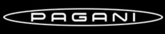
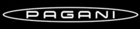

<

<

Horacio Pagani, "The boy who wanted to create the most beautiful car in the World" is a renowned Argentine-Italian automotive engineer and founder of Pagani Automobili S.p.A., a luxury automobile manufacturer known for producing high-performance sports cars. Born on November 10, 1955, in Casilda, Argentina, Pagani developed an early passion for engineering and design. Inspired by the works of Leonardo da Vinci and driven by a vision to create extraordinary automobiles, he pursued his dreams with unwavering determination.
Pagani's career began at Lamborghini, where he played a pivotal role in
developing advanced materials and technologies. The company's first
model, the remarkable Pagani Zonda, debuted in 1999, showcasing Pagani's commitment
to blending art and science. With its distinctive design and powerful
engine, the Zonda set new benchmarks in the supercar industry. Pagani
continued to push boundaries with subsequent models like the Huayra,
introduced in 2011, which featured groundbreaking aerodynamics and
state-of-the-art materials.
Horacio Pagani's dedication to excellence and his ability to merge
engineering precision with artistic elegance have earned him a legendary
status in the automotive world. His creations are celebrated not only
for their speed and performance but also for their aesthetic beauty and
attention to detail. Today, Pagani remains a symbol of innovation,
passion, and the relentless pursuit of automotive perfection.

In Italy, Pagani found an opportunity at Lamborghini, where his innovative
use of composite materials and his forward-thinking designs caught the
attention of the automotive world. This experience ignited his ambition to
establish his own automotive brand.
In 1988, he founded Pagani Composite Research, focusing on advanced
materials and technologies. By 1992, Pagani’s dreams came to fruition with
the establishment of Pagani Automobili. His debut car, the Zonda C12, was
unveiled in 1999 and immediately captured the automotive world’s
imagination.
The Zonda’s unique design, cutting-edge performance, and meticulous
craftsmanship reflected Pagani’s dedication to blending art and
technology.
Under Pagani’s leadership, the company embraced a bespoke approach,
offering clients extensive customization options and ensuring that each
car was a unique work of art. The brand’s emphasis on exclusivity and
craftsmanship cemented its reputation as a leader in the hypercar segment.
The Zonda is known for its striking, aerodynamic design. It features aggressive lines, a low stance, and a prominent rear wing.
The exterior is often made from lightweight carbon fiber and other advanced materials to enhance performance.
The Zonda series includes various models, each with distinct features and specifications. It is known for its striking, aerodynamic design.
It features aggressive lines, a low stance, and a prominent rear wing.
The exterior is often made from lightweight carbon fiber and other advanced materials to enhance performance.
Can accelerate from 0 to 60 mph in as little as 3.2 to 4.0 seconds, showcasing its incredible performance capabilities.
Top speeds vary by model but generally exceed 210 mph, with some versions reaching up to 225 mph.
"A car atelier surpasses time, like an unrelenting wind."
~Horacio Pagani